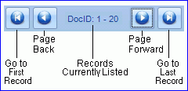
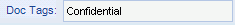
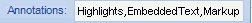
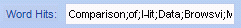

CAUTION! You cannot “undo” the removal of documents or pages after they are deleted. Also, deleting documents removes all records, images, and related files from a case.
Be certain of your actions before proceeding.
This page contains the following content:
See Get Started to access the screen and tab containing this list. Complete any of the following actions in the Documents list:
Check the total number of documents at the top of the pane (in parentheses).
The listing is a tree view with documents at the top level. Click to see pages associated with particular documents.
Click a document or page to see associated details to the right of the Documents list. See the next section for procedures.
To go to a specific image key or document ID:
Right-click in the list, select the appropriate Go to command.
Enter the desired image or document identification (ID).
Click OK. The document or document containing a selected page will be moved into the visible record list and highlighted. If the exact ID does not exist, the closest ID will be highlighted.
Navigate in the Documents list using the buttons at the bottom of the pane (shown below).

See Get Started to access the window and tab containing record details.
Click a page of interest in the records list. Details are presented in the center and right side of the window. Note:
Field listing: if coding forms have been defined for the case being evaluated, choose Show all Fields or Select Coding Form and a specific coding form.
If details in a field(s) in the center part of the screen extend beyond the size of the field, click in the field and use the right arrow key to see the “hidden” content.
If the field listing on the right side of the screen extends beyond the size of the field, change column widths (to some extent) by dragging column separators.
If needed, in the field list, click, then right-click a row and select Copy Record or Copy Field. The data can be pasted into any file for evaluation.
Regarding content in this area of the tab:
Dockey and Image Key are the given details for the selected record.
Document-Level and Page-Level content is information about the selected document or page that has either been imported or has been added by a reviewer in Eclipse. For example:
Doc Tags are the tags that have been applied to a document.

Annotations lists the types of annotations added to a document (or page).

Redactions lists the redactions added to a document (or page).
Word Hits: For cases based on LFP or DLF import files, if the import file included word coordinates, that information will be imported and listed in this field.

Not all fields in this area will contain information. For example, if your case has no field defined as NATIVE, the Native File field will be blank.
If needed, you review the details of all imports to the case:
See Get Started to access the window and tab containing this information.
On the right side of the tab, click Import Job History.
Click next to the import date of interest and review the import details:
Job Name
User ID
Import Fields - click to view the fields imported in the selected job.
When finished, click Close Window.
The following case changes can be made Eclipse Administration:
Documents or pages can be deleted.
The image path can be changed for individual documents.
Other record changes can be made in Eclipse. See Eclipse Web End User Help for details.
|
|
CAUTION! You cannot “undo” the removal of documents or pages after they are deleted. Also, deleting documents removes all records, images, and related files from a case. Be certain of your actions before proceeding. |
See Get Started to access the screen and tab that allows this action. To delete documents or pages:
In the Documents list, locate the needed document(s). For tips on locating a document, see Review the Documents List.
Continue with one or more of the following steps, depending on what needs to be deleted.
To delete a document and its pages:
Click, then right-click the document and select Delete this Document.
In response to the confirmation message, click OK.
To delete a range of documents:
Click, then right-click the first document to be deleted and select Delete a range of documents.
Check the Starting Imagekey; correct if needed.
Enter the last document (Ending Imagekey) of the range to be deleted.
Click Delete Documents.
In response to the confirmation message, click OK, then Close Window. All documents and their pages are deleted from the case.
To delete a document page:
Expand the document containing the page.
Click, then right-click the page and select Delete this page.
In response to the confirmation message, click OK.
To delete a range of pages:
Expand the document containing the first page in the range.
Click, then right-click the first page to be deleted and select Delete a range of pages.
Check the Starting Imagekey; correct if needed.
Enter the last page (Ending Imagekey) of the range to be deleted.
Click Delete Pages.
In response to the confirmation message, click OK, then Close Window. The document(s) remain in the case, but all pages (image files) are deleted.
To delete all documents or pages comprising a saved search:
Ensure the needed saved search exists. If not create and save it in Eclipse, then complete the following steps. Refer to Eclipse Web End User Help for details on saving searches.
Access the needed tab in Eclipse Administration (see Get Started).
Click Load Search.
Right-click anywhere in the Documents list and select Delete documents in the active search (or pages in the active search).
In response to the confirmation message, click OK, then Close Window. If documents were selected, the documents and all pages are deleted. If pages were selected, the documents remain in the case, but all pages (image files) are deleted.